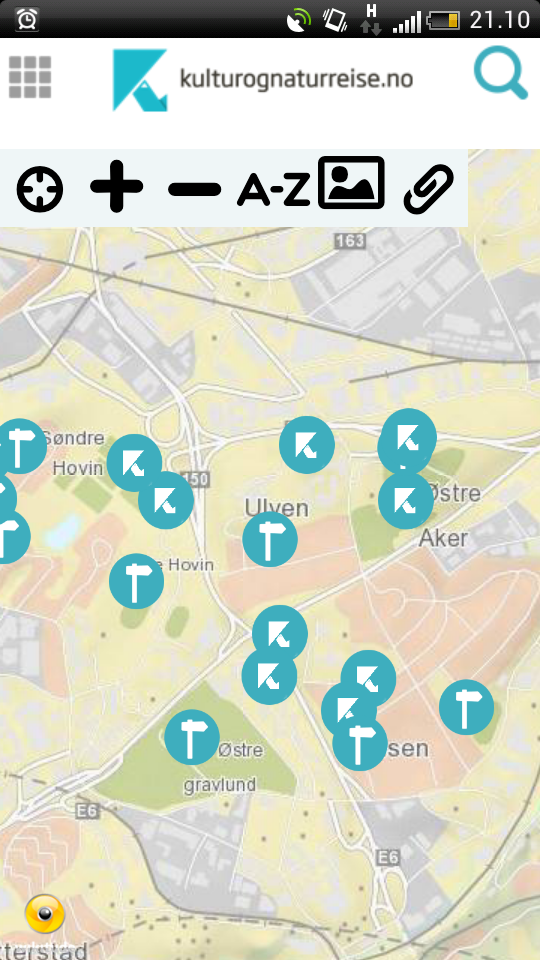
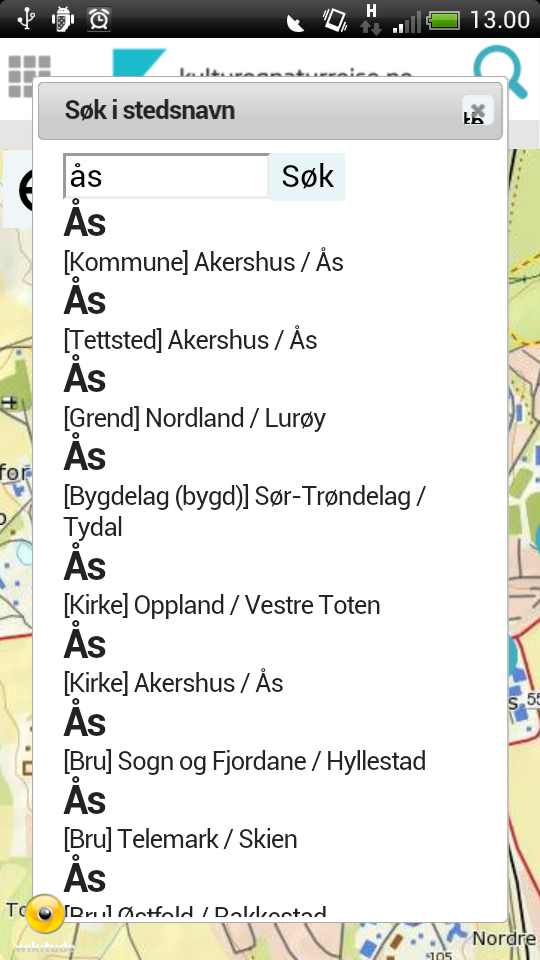
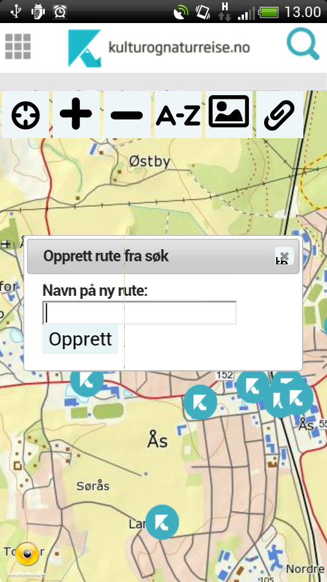
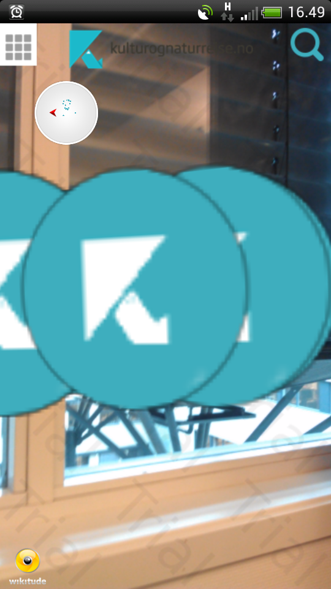
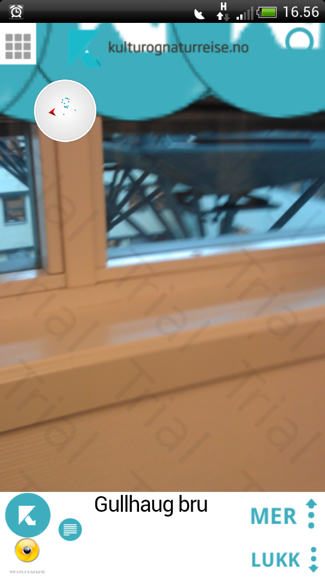
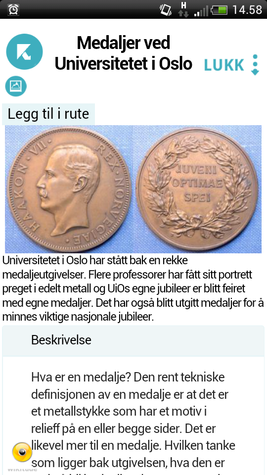
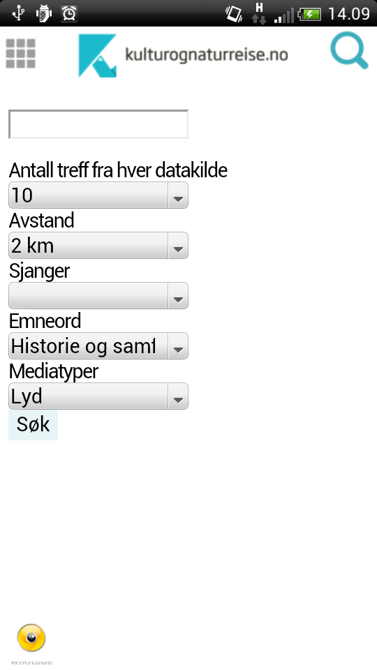
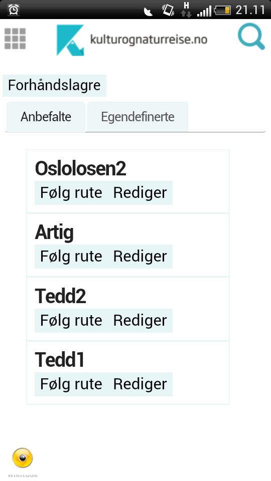
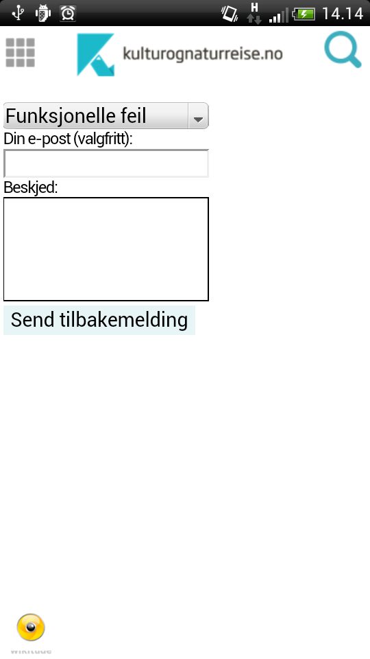
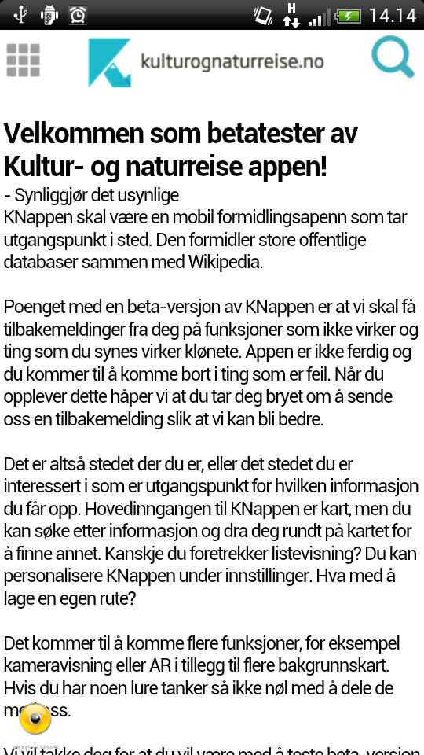

Brukerdokumentasjon for Kultur og-naturreise
Kart
Kartet er den standard oppstartsvisningen til appen.

Det foretas et søk med standardinnstillinger idet man starter appen, når søket er fullført blir alle visninger
fylt med resultatet av søket.
Knappene øverst på kartet har følgende funksjonalitet:
- Sentrer kartet rundt brukerens nåværende posisjon
- Zoom inn
- Zoom ut
- Søk etter steder
- Bytt karttype
- Lagre nåværende kartutsnitt lokalt
Søk etter steder
En av knappene på kartet (A-Z) lar brukeren søke etter steder.

Ved å skrive inn navnet på et sted, vil man få opp resultater fra Sentralt Stedsnavn Register (SSR) med forslag om
steder som passer til det brukeren søkte etter. Ved å trykke på ett av resutlatene vil kartet flytte posisjon til valgt sted.
Det blir så foretatt et nytt søk basert på den nye posisjonen på det stedet man har navigert seg til.
Lagre resultater lokalt
En av knappene på kartet (binders) lar brukeren lagre resultatet lokalt som en rute.

Hvis man for eksempel har brukt SSR søk for å navigere seg til Ås, kan man trykke på bindersen og lage en ny rute basert
på dette resultatet, på denne måten kan man lagre objekter i forskjellige områder enkelt etter å ha filtrert og tilpasset søket
som man vil i forkant.
Meny
Ved å bruke menyen øverst i venstre hjørne kan man navigere til alle sider i appen.
Kameravisning
Kameravisning, også kjent som "Utvidet virkelighet" viser alle objektene fra resultatet som flytende
ikoner tegnet oppå kameravisningen til mobilen.

I denne visningen får man visualisert hvilke retninger
de forskjellige objektene er og hvor langt unna de er (basert på størrelse av ikonet).
Denne visningen benytter seg av mobilens kompass, og kan påvirkes av eksterne faktorer som forstyrrer dette.
Liste
Listevisningen viser alle resultater fra søket i en flat struktur. Her har man mulighet til å bla seg gjennom
resultatet dersom dette er stort.
Forhåndsvisning av PoI
Forhåndsvisningen av et objekt inneholder kategori, mediatype og tittel.

I kartvisning og kameravisning får man opp en forhåndsvisning av objektet man trykket på før man
kan velge å gå videre til den fullstendige detaljvisningen av objektet.
I listevisningen fungerer ekspandering av listelementene som forhåndsvisningen.
Detaljvisning
I detaljvisningen av et objekt får man opp all relevant informasjon om objektet.

Felt som vises:
- Tittel
- Kategori (ikon)
- Mediatype (ikon)
- Bilde, video, lyd (utifra mediatype)
- Ingress
- Beskrivelse
- Emneord (tags)
- Datering
- Kilde
- Institusjon (hvem "eier" dataen)
- Original versjon (opprinnelse av dataen)
- Opphavsperson
- Lisens
- Eksterne lenker (andre lenker til informasjon om dataen)
I denne visningen kan man legge objektet til i en eksisterende rute, eller opprette en ny som objektet da
blir lagt inn i. Rutene kan man senere se på rutevisningen.
Søk
Søkesiden gir brukeren mulighet til å definere et søk utenfor det som er standard fra innstillingene.

På denne siden kan man definere:
- Tekst man vil søke etter
- Hvor mange resultater man vil ha
- Hvor stor avstand man vil søke innenfor
- Hvilken sjanger man vil søke innen
- Hvilke emneord man vil søke innen
- Hvilken mediatype man vil ha tilbake
Ved å trykke søk blir brukeren sendt tilbake til den skjermen de har satt som oppstartsvisning i innstillinger,
og søket blir foretatt i bakgrunnen. Resultatet skrives ut i alle resultatvisningene når søket er ferdig.
Ruter
Rutevisningen inneholder alle ruter, delt opp i anbefalte ruter fra Kulturrådet samt egendefinerte
ruter som brukeren selv har laget.

Ved å velge å følge ruten vil søkeresultatet som tidligere vist i kart, kameravisning og liste, bli erstattet med
objektene fra den valgte ruten. Etter dette er funksjonaliteten i objektene lik som med et vanlig søkeresultat.
Innstillinger
Innstillingsskjermen inneholder flere valg man kan sette som vil påvirke oppstarten til appen, og alle
standardinnstilinger som brukes i appen.
- Oppstartsvisning - Når man starter appen vil den begynne i valgt oppstartsvisning
- Standard antall resultater fra hver datakilde
- Standard avstand i søk
- Standard zoomnivå i kart
- Standard karttype
Administratorinnstillinger får man se etter å ha trykket 10 ganger på logoen på toppen av siden.
Disse inneholder:
- Passordfelt - Dette må man ha fylt ut riktig for å få lov til å utføre publisering av ruter. Passordet sjekkes på serveren.
- Slå av mellomlagring - Med denne slått av vil mobilen slutte å mellomlagre data.
- Tøm mellomlagring - Denne tømmer all mellomlagret data på mobilen
Tilbakemeldingsskjema
For å kunne få tilbakemeldinger fra brukerne inneholder appen en tilbakemeldingsvisning.

Her kan brukeren velge en kategori til sin tilbakemelding, og legge ved sin e-post hvis ønskelig.
Ved å trykke på "send" tilbakemelding blir brukerens info sendt til eposten som er definert på servicen som tar imot
tilbakemeldingene og sender dem videre via epost.
Om appen
Om appen er en side med informasjon om appen, og forslag til hvilke funksjoner man kan teste ut.
